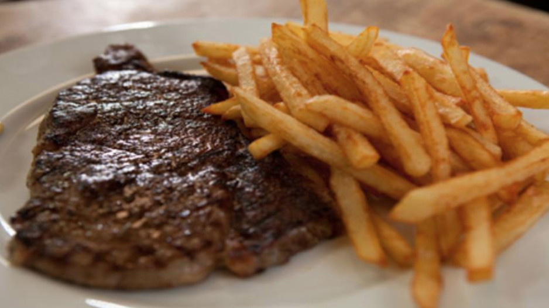

Steak and chips
 Ingredients:
2 large Maris Piper potatoes
1 x 220g / 8oz steak, cut from a whole piece
2 tbsp extra virgin olive oil
Salt and freshly ground black pepper
handful of parsley leaves
Dijon mustard, to serve
50g of Pecorino cheese
salt and pepper to taste
Directions:
- For the chips, peel the potatoes and cut into whatever size you prefer. Wash well in cold water until the water runs clear, drain and pat dry with a clean tea towel.
- Fill a deep-fat fryer or a large, deep, heavy-bottomed pan two-thirds full with vegetable oil. Heat the oil to 140C-160C/285F-300F (use a probe thermometer to check the temperature if you're not using a deep-fat fryer). (CAUTION: Hot oil can be dangerous. Don't leave unattended)
- Carefully place the chips in the hot oil and cook for 7-8 minutes or until just cooked through (without colouring). Remove from the oil using a slotted spoon, drain onto kitchen paper and set aside to cool. You may do this a few hours in advance, keeping the chips covered, in the fridge.
- Meanwhile, to finish the chips, deep-fry the chips in batches again in the oil at 180C/350F for two minutes, or until crisp and golden-brown. Drain on kitchen paper and season lightly with salt.
- For the steak, cut small slits across the line of fat on the steak and drizzle a little oil over the fat. Heat a griddle pan over a high heat. Salt the edge of the fat on the steak and place it onto the pan, standing it up on the fatty edge. Hold it there for a few seconds until the fat begins to run down the grooves of the grill; this is all the lubrication you will need to cook the steak
- Allow the steak to fall over, season it very lightly with salt and plenty of pepper, then grill for two minutes on each side for a rare steak; three minutes for medium; and four minutes for well-done. However, remember the thinner the steak, the less the cooking time.
- Once cooked, leave the steak to rest on a warm plate in a warm place (such as a very low oven) for a few minutes, so that the juices will settle evenly within the meat, while also allowing the meat to relax and become even tenderer.
- Serve the steak and chips with Dijon mustard.